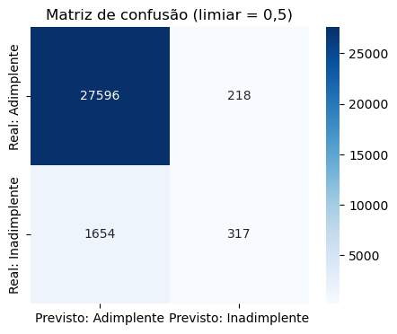
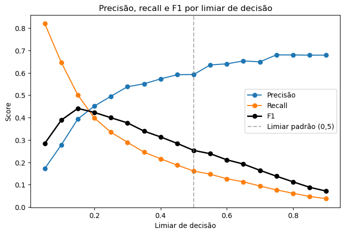

Em classificação binária, "o modelo acertou X%" é uma pergunta incompleta. Acertou o quê? Acertou quem ia inadimplir, ou acertou quem não ia? Errar pra um lado custa a mesma coisa que errar pro outro? Todas as métricas deste post nascem da mesma tabela — a matriz de confusão — mas cada uma responde a uma pergunta de negócio diferente.
A matriz de confusão
Em qualquer classificação binária, toda previsão cai em uma de quatro caixas, comparando o que o modelo previu com o que realmente aconteceu:
| Previsto: Positivo | Previsto: Negativo | |
|---|---|---|
| Real: Positivo | Verdadeiro Positivo (VP) | Falso Negativo (FN) |
| Real: Negativo | Falso Positivo (FP) | Verdadeiro Negativo (VN) |
No caso de risco de crédito que uso como exemplo neste post (prever se um tomador vai inadimplir), isso fica:
- Verdadeiro Positivo (VP): o modelo previu inadimplência, e o tomador realmente inadimpliu.
- Falso Positivo (FP): o modelo previu inadimplência, mas o tomador pagou certinho — um bom cliente barrado à toa.
- Falso Negativo (FN): o modelo previu que ia pagar, mas o tomador inadimpliu — um calote que passou despercebido.
- Verdadeiro Negativo (VN): o modelo previu que ia pagar, e realmente pagou.
Acurácia
Acurácia = (VP + VN) / (VP + VN + FP + FN)
A pergunta que responde: "de tudo que o modelo previu, quanto ele acertou no total?" É a métrica mais intuitiva — e a mais perigosa quando as classes são desbalanceadas.
Precisão
Precisão = VP / (VP + FP)
A pergunta que responde: "das vezes que o modelo disse 'vai inadimplir', quantas vezes ele realmente acertou?" Precisão alta significa poucos falsos alarmes — quando o modelo aponta risco, você pode confiar.
No exemplo de crédito: se o banco usa o modelo pra decidir quem recusar, precisão baixa significa recusar muita gente boa por engano (custo: perder clientes saudáveis e a receita que eles trariam).
Recall (sensibilidade)
Recall = VP / (VP + FN)
A pergunta que responde: "de todo mundo que realmente ia inadimplir, quantos o modelo conseguiu pegar?" Recall alto significa poucos casos de risco escapando despercebidos.
No exemplo de crédito: recall baixo significa deixar passar gente que vai dar calote (custo: o prejuízo direto do empréstimo não pago — geralmente maior que o custo de um falso positivo).
F1-score
F1 = 2 × (Precisão × Recall) / (Precisão + Recall)
É a média harmônica entre precisão e recall — não a média simples. A média harmônica pune mais forte quando uma das duas é muito baixa (diferente da média aritmética, que "esconde" um valor ruim atrás de outro bom). F1 alto exige as duas métricas razoavelmente altas ao mesmo tempo.
A pergunta que responde: "existe um jeito de resumir precisão e recall num só número, sem favorecer nenhuma das duas?" É um ponto de partida neutro — mas "neutro" não é sempre o que o negócio precisa, como o estudo de caso abaixo mostra.

| Limiar | Precisão | Recall | F1 | Acurácia |
|---|---|---|---|---|
| 0,50 (padrão) | 0,593 | 0,161 | 0,253 | 93,7% |
| 0,15 (melhor F1) | 0,394 | 0,501 | 0,441 | 91,6% |
Baixando o limiar de decisão de 0,5 para 0,15, o recall salta de 16% para 50% — o modelo passa a capturar 3x mais inadimplentes reais. O preço: a precisão cai de 0,59 para 0,39 (mais falsos positivos), e — o detalhe mais contraintuitivo — a acurácia piora, de 93,7% para 91,6%. Um modelo estritamente "melhor" no que realmente importa (pegar quem vai dar calote) pode ter acurácia pior. É a prova concreta de que otimizar acurácia e otimizar recall são objetivos diferentes, às vezes opostos.

Vantagens e desvantagens de priorizar cada uma
Priorizar precisão
Quando faz sentido: o custo de um falso positivo é alto. Exemplos: marcar um e-mail legítimo como spam (o usuário perde uma mensagem importante), ou recusar crédito a um bom cliente (o banco perde receita e relacionamento).
Desvantagem: ao exigir mais confiança antes de marcar algo como positivo, o modelo fica mais "tímido" — deixa passar mais casos reais (recall cai).
Priorizar recall
Quando faz sentido: o custo de um falso negativo é alto. Exemplos: deixar passar uma fraude, deixar passar um diagnóstico de doença grave, deixar passar um tomador que vai dar calote num valor alto.
Desvantagem: pra capturar mais casos reais, o modelo passa a "gritar risco" com mais frequência — aumenta o número de falsos alarmes (precisão cai), o que tem custo operacional (mais casos pra revisar manualmente, mais clientes bons incomodados).
Priorizar acurácia
Quando faz sentido: as classes estão razoavelmente balanceadas (nenhuma é muito mais rara que a outra) e os dois tipos de erro custam parecido.
Desvantagem: em problemas desbalanceados — a maioria dos problemas interessantes de negócio (fraude, inadimplência, doenças raras, churn) — acurácia alta pode esconder um modelo que não pega nenhum caso da classe minoritária, exatamente a que importa.
Priorizar F1
Quando faz sentido: você não tem uma estimativa clara de qual erro custa mais caro, e quer um critério único e neutro pra comparar modelos ou escolher um limiar.
Desvantagem: "neutro" é uma escolha, não uma ausência de escolha — o F1 assume que um falso positivo e um falso negativo custam a mesma coisa, o que raramente é verdade no mundo real. No exemplo de crédito, o prejuízo de um empréstimo não pago tende a ser bem maior que o custo de negar crédito a um bom pagador — nesse caso, otimizar F1 ainda seria conservador demais; valeria priorizar recall mais que o F1 sugere.
Resumindo
| Métrica | Fórmula | Pergunta que responde | Prioriza quando |
|---|---|---|---|
| Acurácia | (VP+VN)/total | Quanto acertei no geral? | Classes balanceadas, erros com custo parecido |
| Precisão | VP/(VP+FP) | Quando eu disse "sim", confio? | Falso positivo é caro |
| Recall | VP/(VP+FN) | Dos casos reais, quantos peguei? | Falso negativo é caro |
| F1 | 2·P·R/(P+R) | Equilíbrio entre as duas? | Custos de erro desconhecidos ou parecidos |
A métrica "certa" não existe fora do contexto do problema — ela é definida pelo que custa mais caro errar. Escolher uma métrica de avaliação é, na prática, uma decisão de negócio disfarçada de decisão técnica.